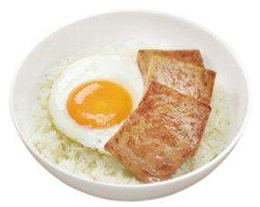
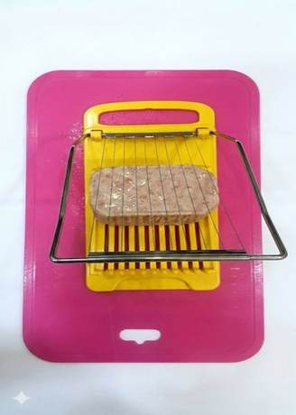
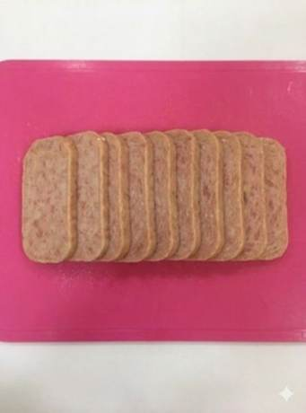
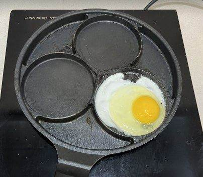
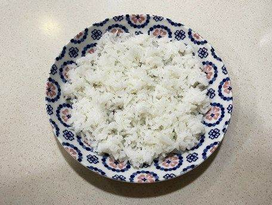
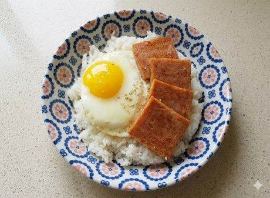

<!DOCTYPE html>
<html lang="ko">
<head>
<script>(function(){try{if(localStorage.getItem("beoltoon_auth")!=="ok"){location.replace("login.html");}}catch(e){location.replace("login.html");}})();</script>
<meta charset="UTF-8" />
<meta name="viewport" content="width=device-width, initial-scale=1.0" />
<title>스팸계란비빔밥 - 조리매뉴얼</title>
<link rel="stylesheet" href="style.css" />
</head>
<body>

<div class="header">
  <a href="food.html">&larr; 목록으로</a>
</div>

<div class="container">

  

  <div class="info-box">
    <table class="info-table">
      <tr><th>메뉴명</th><td>스팸계란비빔밥</td></tr>
      <tr><th>판매가격</th><td>6,500원</td></tr>
      <tr><th>원재료</th><td>스팸, 밥, 계란프라이, 간장, 깨, 참기름</td></tr>
      <tr><th>사용 부자재</th><td>덮밥접시, 소스볼</td></tr>
      <tr><th>메뉴특징</th><td>밥 위에 노릇하게 구운 스팸, 계란프라이를 올려 간장과 참기름을 넣고 비벼먹는 최고의 조합 메뉴</td></tr>
    </table>
  </div>

  <div class="steps-title">조리방법</div>

  <div class="step-card">
    
    <div class="step-text">
      <span class="step-number">1</span><br>
      스팸을 슬라이서로 잘라준다.
    </div>
  </div>

  <div class="step-card">
    
    <div class="step-text">
      <span class="step-number">2</span><br>
      반으로 한번 더 잘라서 정사각형 모양이 되도록 준비한다.
    </div>
  </div>

  <div class="step-card">
    
    <div class="step-text">
      <span class="step-number">3</span><br>
      프라이팬에 기름을 약간 두른 후 스팸 4조각을 노릇하게 구워준다. (인덕션 세기 3~4)
    </div>
  </div>

  <div class="step-card">
    
    <div class="step-text">
      <span class="step-number">4</span><br>
      계란프라이팬에 기름을 약간 두른 후, 계란 1개를 깨서 반숙 프라이를 구워 준비한다.
    </div>
  </div>

  <div class="step-card">
    
    <div class="step-text">
      <span class="step-number">5</span><br>
      덮밥접시에 밥 200g을 펼쳐서 담아준다.
    </div>
  </div>

  <div class="step-card">
    
    <div class="step-text">
      <span class="step-number">6</span><br>
      밥 위에 스팸 4장, 계란프라이 1개를  올려준다.
    </div>
  </div>

  <div class="step-card">
    
    <div class="step-text">
      <span class="step-number">7</span><br>
      참기름 5g을 크게 한바퀴 둘러준 뒤, 깨를 뿌려 완성한다.
    </div>
  </div>

  <div class="step-card">
    <div class="step-text">
      <span class="step-number">8</span><br>
      소스볼에 간장 1펌프(10g)을 담고, 단무지, 우동국물과 함께 제공한다.(냅킨, 물티슈 제공)
    </div>
  </div>

  <div class="info-box">
    <p style="font-size:13px; color:#c0392b; margin:0; line-height:1.6;">스팸은 하루 사용량만큼 전처리<br><br>메뉴 제공 시 간장은 기호에 맞게 조절해서 드시라는 안내 멘트 필요<br>※ 우동국물 제조<br>우동원액 1펌프(10g)+<br>뜨거운물 150g+우동건더기 2g</p>
  </div>

  <div class="footer-note">
    본 저작물을 무단으로 사용하는 것은 저작권자의 권리 침해의 불법 행위로 법적 분쟁을 야기할 수 있습니다.<br>COPYRIGHT ⓒ ISENS F&B INC. ALL RIGHTS RESERVED
  </div>

</div>

  <script src="videos.js"></script>
</body>
</html>